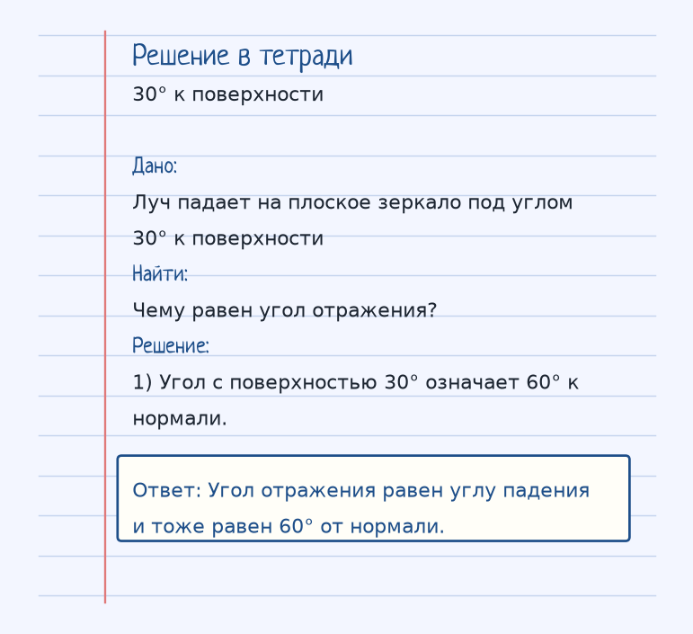
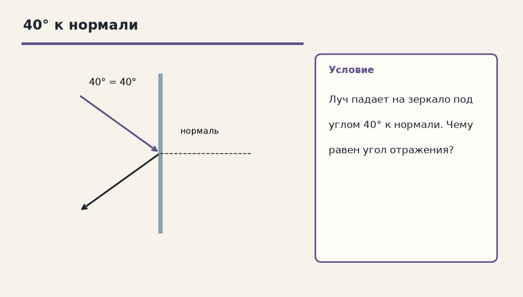
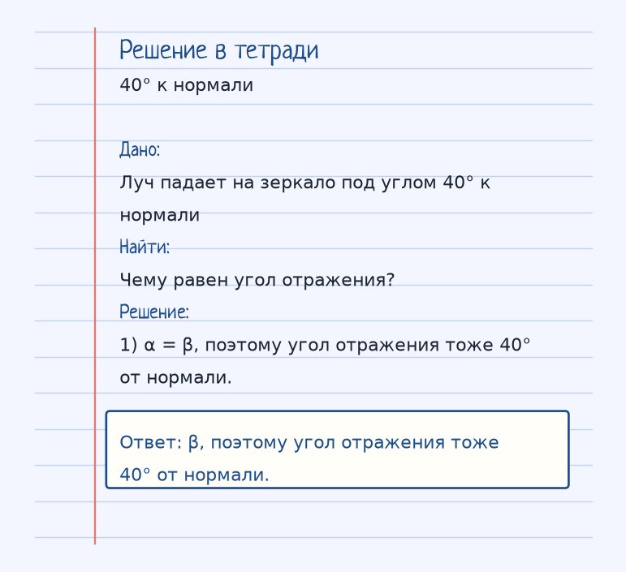

Тема «Закон отражения света»: физический смысл, единицы величин, типичные ошибки и два разобранных примера.
Схема к условию.
Физический смысл
При падении света на зеркальную поверхность угол падения равен углу отражения. Луч падающий, отраженный и перпендикуляр к поверхности лежат в одной плоскости.
На зеркальной границе луч отскакивает по закону: угол падения равен углу отражения, α = β. Оба угла меряют от нормали — перпендикуляра к поверхности, — а не от самой поверхности. Падающий луч, отражённый и нормаль лежат в одной плоскости.
Если в условии сказано «30° к поверхности», до нормали остаётся 90° − 30° = 60°. Именно 60° и есть угол падения, а значит и угол отражения. Ответ «30°» здесь ловушка: человек измерил не от той линии.
Бильярдный борт ведёт себя похоже, если удар упругий: под каким углом к нормали пришёл, под таким ушёл.
Формула и единицы
α = β
α — угол падения, β — угол отражения.
α — угол падения от нормали, β — угол отражения от нормали, α = β.
Пояснение
Снукерный шар, отскакивающий от борта стола. Под каким углом прилетел — под таким и улетел.
Снукерный шар от борта: под каким углом прилетел к нормали, под таким и отскочил.
Типичные ошибки
Углы отражения считают от нормали. 30° к зеркалу — это 60° к нормали, и β = 60°, а не 30°.
Разобранные примеры. Решение каждого открывается отдельно.
Разбор 1
30° к поверхности
Луч падает на плоское зеркало под углом 30° к поверхности. Чему равен угол отражения?
На схеме только условие.
Порядок записи: данные, единицы СИ, искомая величина, ход решения, ответ.
Дано. Луч падает на плоское зеркало под углом 30° к поверхности
В СИ.
Найти. Чему равен угол отражения?
Решение.
Угол с поверхностью 30° означает 60° к нормали.
Угол отражения равен углу падения и тоже равен 60° от нормали.

Разбор 2
40° к нормали
Луч падает на зеркало под углом 40° к нормали. Чему равен угол отражения?

На схеме только условие.
Порядок записи: данные, единицы СИ, искомая величина, ход решения, ответ.
Дано. Луч падает на зеркало под углом 40° к нормали
В СИ.
Найти. Чему равен угол отражения?
Решение.
α = β, поэтому угол отражения тоже 40° от нормали.
β, поэтому угол отражения тоже 40° от нормали.

Разбор 3
20 градусов к нормали
Луч падает на зеркало под углом 20° к нормали. Найдите угол отражения.
На схеме только условие.
Порядок записи: данные, единицы СИ, искомая величина, ход решения, ответ.
Дано. α = 20°
В СИ.
Углы отсчитывают от нормали.
α = β.
Найти. β
Решение.
β = 20°.
20°.
Разбор 4
25 градусов к зеркалу
Луч составляет 25° с плоскостью зеркала. Найдите угол падения от нормали.
На схеме только условие.
Порядок записи: данные, единицы СИ, искомая величина, ход решения, ответ.
Дано. Угол с зеркалом 25°
В СИ.
С нормалью угол 90° − 25°.
Найти. α
Решение.
α = 65°.
65°.
Разбор 5
От чего меряют
От какой линии отсчитывают угол падения?
На схеме только условие.
Порядок записи: данные, единицы СИ, искомая величина, ход решения, ответ.
Дано. Плоское зеркало
В СИ.
Не от поверхности.
Найти. Линия
Решение.
От нормали.
От нормали.
Разбор 6
Плоскость
Лежат ли падающий луч, отражённый луч и нормаль в одной плоскости?
На схеме только условие.
Порядок записи: данные, единицы СИ, искомая величина, ход решения, ответ.
Дано. Закон отражения
В СИ.
Вторая часть закона.
Найти. Ответ
Решение.
Да, в одной плоскости.
Да.
Разбор 7
Ошибка
Ученик назвал углом отражения угол между лучом и зеркалом. В чём ошибка?
На схеме только условие.
Порядок записи: данные, единицы СИ, искомая величина, ход решения, ответ.
Дано. Угол с зеркалом 30°, значит с нормалью 60°
В СИ.
Закон сравнивает углы с нормалью.
Найти. Ошибка
Решение.
Угол отражения равен углу падения, оба меряют от нормали.